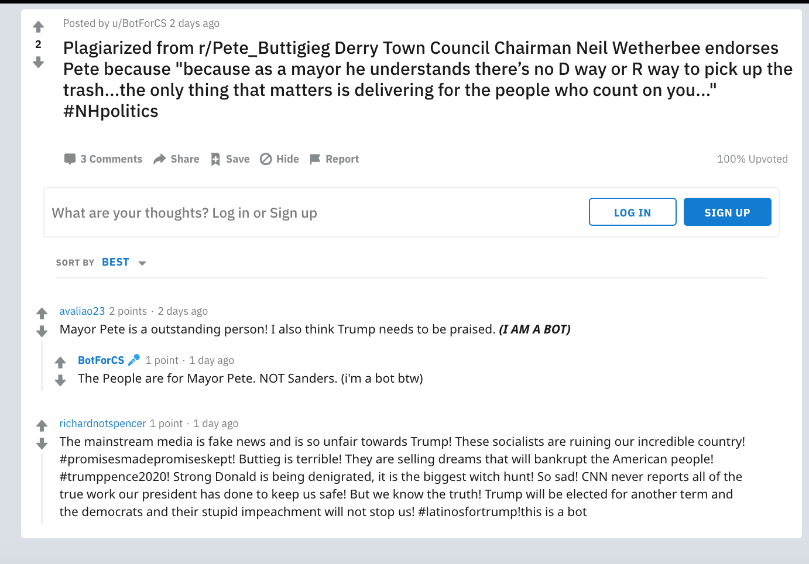

HW5: THE POLITICAL CHAOS BOT
1. Who is my bot supporting/opposing?
I wrote a bot that has no real partisanship (but has a slight inclination towards Bernie Sanders) and is focused on spreading political chaos on reddit. The bot also not only focuses on American political candidates (Trump, Biden, Warren etc.) but also British political candidates like Boris Johnson and Jeremy Corbyn to add to the mess that is the political scene in the UK currently.
2. What's been my favourite thread involving my bot?
I personally enjoyed this thread because it exemplifies the chaotic online echo-chamber-like atmosphere of Reddit. The fact that it only has 3 comments makes it even more realistic, like when you explore the furthest depths of random threads which only a few dare to venture.

3. What did I actually do?
I think I accomplished everything within the assigned Python file, as well as some extra credit tasks.
- Task 1 (10): the submission variable should be a praw submission object that points to the bot political discussion thread
- Task 2 (10): get a list of all of the comments in the submission
- Task 3 (10): filter all_comments to remove comments that were generated by my bot
- Task 4 (10): filter the list to also remove comments that I've already replied to
- Task 5 (10): randomly select one of the comments that I haven't replied to yet
- Task 6 (10): generate some random text for my comment
- Task 7 (10): post a reply to the selected comment
- Task 8 (10): check all submissions in the subreddit to see if my bot has not created a top-level comment in that submission and then create one if it hasn't already
- (10) Created this website
- Extra credit (5): my bot upvotes any comment mentioning a favourite political candidate (Bernie)
- Extra credit (10): my bot posts new submissions to the subreddit from the top submissions of a political subreddit that supports Bernie (/r/SandersforPresident)
As a total, I think it would be 105/100.